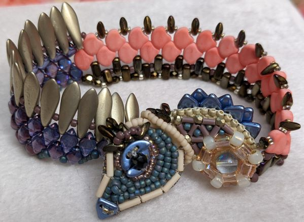
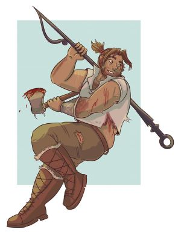
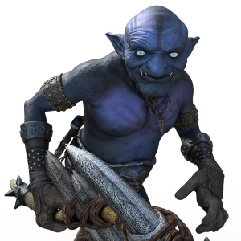

Meet the Maker
Lily Ellison is a software and web developer with an extensive background in veterinary medicine. Driven to provide end-users attractive, functional websites and software platforms best suited to their needs, Lily is detailed-oriented and a quick learner with a passion for intuitive design. Lily's strengths include logic, problem-solving, and creativity.
Whenever Lily is away from her computer, she is likely to be found creating with beads, rocks, and wire or spending time with her family and pets. Hobbies include beading, lapidary, and dog training.
Black Dog Construction, LLC
Sample Websites
- Cocoa Collection
- All About Cocoa! This site demonstrates basic html usage and styling. One of the first sites I designed in Spring 2022.
- Cuddly Koalas
- A site dedicated to saving koalas. This example uses forms, flexbox, and media queries to make a more responsive and interactive experience.
 Summit Animal Rescue
Summit Animal Rescue- This demonstration site is for a dog rescue group and shows other styling techniques and options.
- Pets To Go
- Another site for animal care, this fictitious company helps pets find loving homes by using all of the elements learned in an intro class to html.
JavaScript Sampler
This landing page for an Introduction to JavaScript class includes links to various demonstrations. These demos are more technical than design-oriented and show a mastery of basic JavaScript.
Magnus Vs Goblin
 This was the final project for an introduction to JavaScript class. Click to roll the dice and attack the evil goblin as Magnus Burnsides, the infamous human fighter from The Adventure Zone. *Disclaimer: Magnus Burnsides and The Adventure Zone are creations of the McElroy family (Travis, Griffin, Clint, and Justin) and do not belong to Lily Ellison. Fan art of Magnus Burnsides used with permission from the artist, Jamie Denman-Jones.*
Hangry Boids

A particle flocking simulator, made in collaboration with a team from TalentSprint's TechWise, Cohort 2, powered by Google. This simulation game was created using C# in Unity. I was responsible for the sound design and GUI. Made in the summer of 2023.
Code for this game can be found on the team's GitHub: Here.
Video Embedding
A YouTube video demonstrating the above-mentioned Hangry Boids:
Video From a Phone:
This is known as a Kaleidocycle. The pattern is Summer Sensations, designed by DiMarca Online and beaded by me, Lily Ellison. Instead of using the Miyuki Delica beads in the colors listed in the pattern, I used Toho Aiko cyclinder beads in colors I had in my stash. I tried to use colors close to the ones listed on the original pattern, but could not always accommodate. This video has no sound and is only meant to give a demonstration of how the piece moves.
As an MP4:
As a WebM:
Social Media
The best way to stay up to date with my newest beading projects, or catch up with what I have done, is through Facebook.
GitHub has some of my coding projects. 
Connect with me on 
Send me an email at 
Here you can find more links for artists that inspire me as well as a demonstration of embedding social media links.
PayPal Demo
PayPal is a very popular way to pay for things. I am familiar with using their tools as well
Visualize This: Data
Wages by Education Level Racing Bar Chart Using Flourish:
I am also familiar with Tableau for data visualization.
CAPTCHA Again
The form on the koala contact page uses Google reCAPTCHA as a demonstration of implementing security features.
Check it out here: 
Silver Linings
As well as this site being hosted on Amazon Web Services (AWS), I have also created this simple, but effective, interactive webpage that will great the visitor and store the information entered in a database on the cloud.
The Bead Dragon
All of these demonstrations and more can be found on my main website, The Bead Dragon as well. Please stop by and take a look.